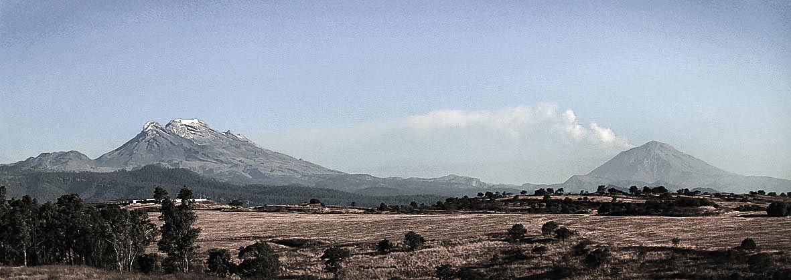

La mayor parte del territorio mexiquense se localiza en la parte central del Eje Neovolcánico. Comprende los valles de México, Toluca, parte del valle de Puebla-Tlaxcala y una pequeña porción del Valle del Mezquital al norte del estado que antiguamente se conocía como la Teotlalpan, así como las cadenas montañosas Sierra Nevada, Monte de las Cruces, Sierra de Monte Alto, Sierra de Tetzontlalpan al norte y Cumbres Occidentales en colindancia con Michoacán.
Sobre esta misma meseta se localizan importantes elevaciones como el volcán Popocatépetl (5500 m), el Iztaccíhuatl (5220 m), el Nevado de Toluca (4680 m) y los cerros Tláloc (4120 m), Telapón (4060 m) y Jocotitlán (3910 m). La parte sur del territorio mexiquense se localiza dentro de la depresión del Balsas, misma que comparte con los estados de Guerrero, Michoacán, Puebla y Morelos.
El clima de la zona en general es templado subhúmedo con lluvias en verano y temperatura media entre los 10 y 16° centígrados con precipitaciones entre 500 y 1500 mm. excepto en la depresión del río Balsas; en tierra caliente, donde es cálido subhúmedo debido a la baja altitud y en la cima de los volcanes que es polar por la altura
La temperatura media anual es de 14.7 °C, las temperaturas más bajas se presentan en los meses de enero y febrero son alrededor de 3.0 °C.La temperatura máxima promedio se presenta en abril y mayo es alrededor de 25 °C.
Las lluvias se presentan durante el verano en los meses de junio a septiembre, la precipitación media del estado es de 900 mm anuales.
El "Popo" y la Mujer "dormida" vistos desde el Estado de Mexico.

Lagunas del Sol y la Luna en la sima del volcan Nevado de Toluca